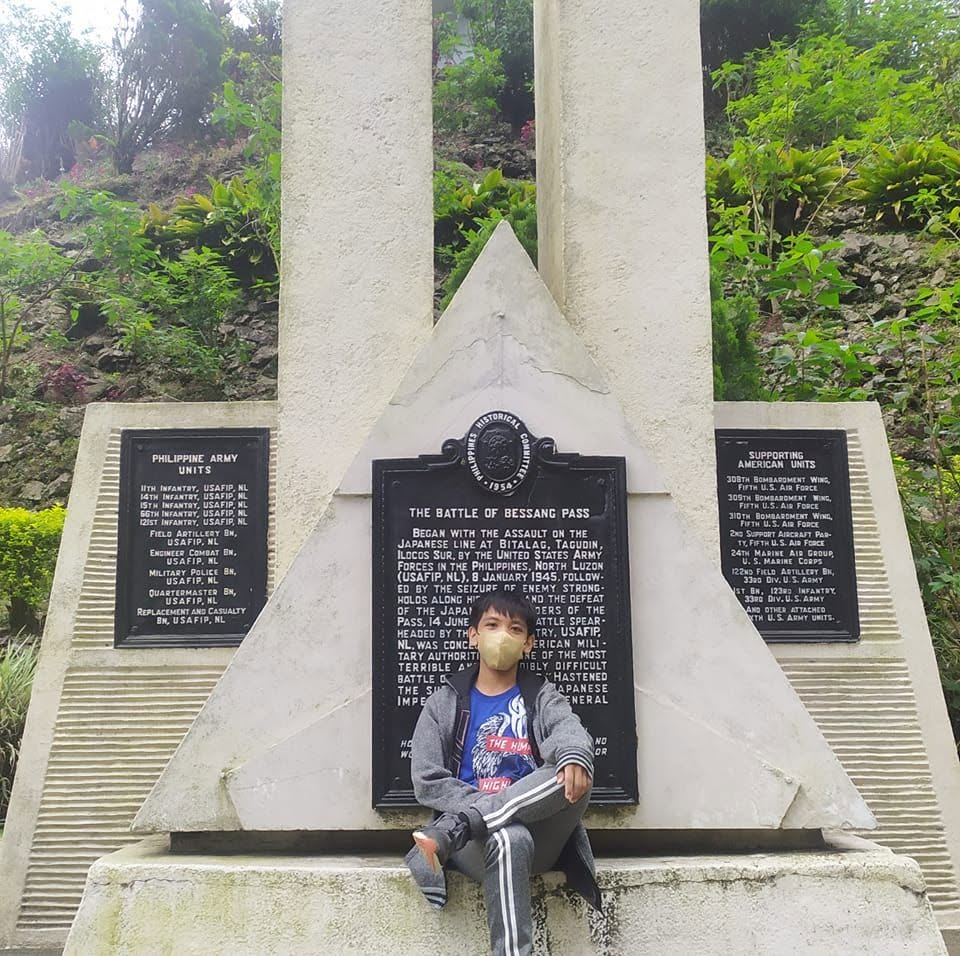

Welcome to my Personal Portfolio!

Christian Jay B. Pedro
Hi! My name is Christian Jay B. Pedro, an Information Technology student majoring in Web Development at the University of the Cordilleras.
I am deeply interested in learning HTML, CSS, programming, and various IT-related skills. Coming in with no prior background in computer
programming or other technical fields, this semester marks my very first encounter with computer skills and coding. Despite starting from scratch,
I am genuinely excited about the journey ahead and eager to grow as a developer.
If you would like to know more about my background and goals, please feel care to check out my About Me section. Thank you for visiting!
About Me
I am a dedicated second-year IT student who has developed a strong passion for Web Development. Starting this semester, I took my first bold steps into the world of coding, beginning with HTML. I am fully committed to expanding my knowledge and mastering new technical abilities as I progress through my degree. See More...